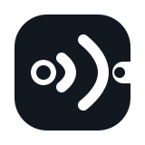

PrimaryMint + amber · light/dark UI

NegativeJedna jasna farba · ciemne i foto tła

MonochromeGrawer, sitodruk, dokumentacja
MicroPróbki 1:1 · minimum 20 px
Open Radio Core2 · brand system
Kostka urządzenia, dwie fale wycięte w negatywie i jeden kierunek wyjścia. Znak działa bez fontu i zachowuje charakter w RGB565.

